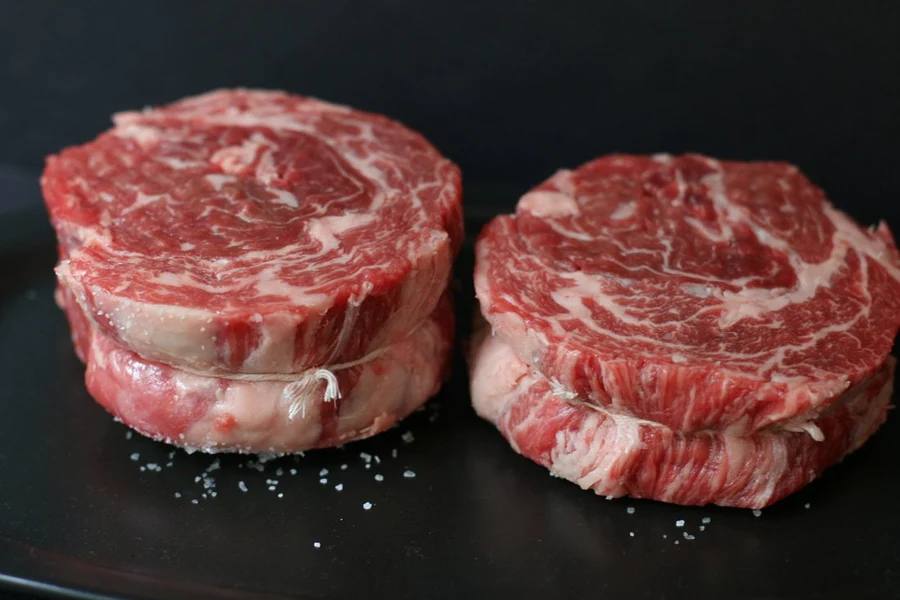

Ribeye Cap Steaks

Description:
Although very hard to find in this form, ribeye cap steaks are the most desirable bites of beef imaginable. Butchers typically cut the rib roast into full ribeye steaks which include the eye of rib and the coveted spinalis (aka cap), which is the outer edge of the standard ribeye steak.
A tasty alternative is to buy the rib roast whole and butcher it yourself. This way you can remove the entire spinalis muscle from the eye of rib, lay it flat, roll it up, slice, and get to cooking the best steak of your life.
Here is a great video that walks you through that butchering process. All you need is a sharp boning knife, a large cutting board, and some butchers twine.
The Recipe
For the recipe, we're going to start as if the butchering process is complete and we're ready to cook.
Ingredients:
- Ribeye cap steak, at least 6 ounces per person
- A high temperature cooking fat (i.e. avocado oil, duck fat, or beef tallow)
- Kosher sea salt
- Your favorite steak rub (recommend 4 Rivers Coffee Rub)
Steps:
- Prepare your smoker to 225 degrees with bold smoking wood (ideally hickory).
- Apply a light coating of fat to the outside as a binder.
- Coat all sides with salt.
- Coat all sides with your favorite beef rub.
- Place a meat thermometer in the middle of the smallest steak.
- Place the steaks on the smoking racks and let them heat up to an internal temperature of 120 degrees (F)
- Once steaks have reached desired internal temperature, remove from the smoker and tent them with tin foil
- On either a charcoal grill or stove top, begin heating a cast iron skillet. Let it get as hot as it possibly can. Add a small amount of fat to the pan, just enough to coat the bottom of the pan without puddling.
- Place the steaks on the hot skillet. Turn them onto a new side every 20 to 30 seconds, probing the internal temperature along the way, until the internal temperature reaches 128 degrees (F).
- Pull the steaks off and let them rest for at least 5 minutes before serving.